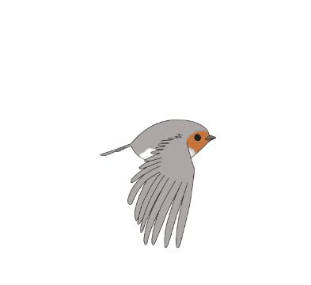
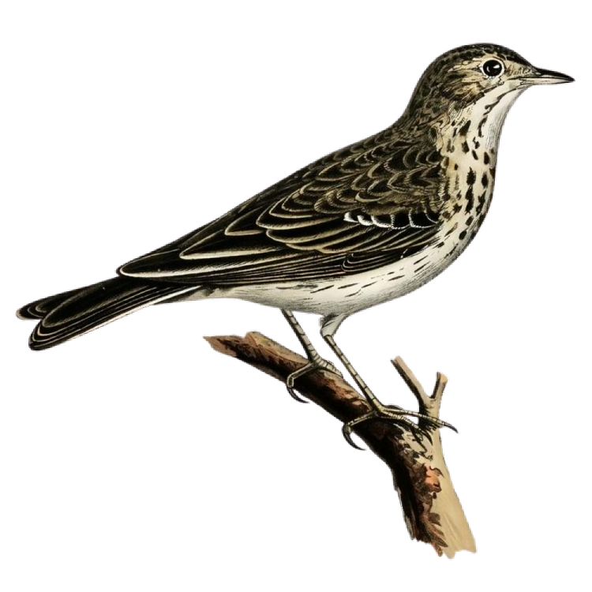
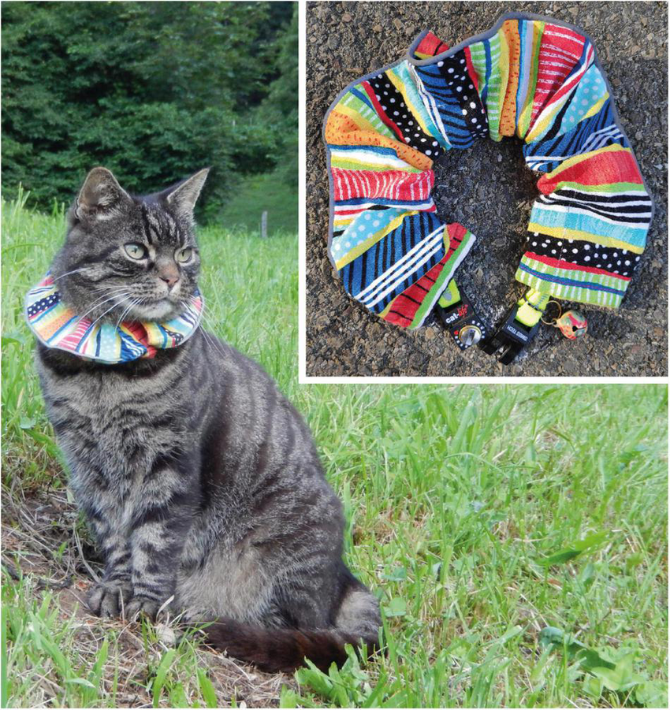

The Swiss Bird Index (SBI) was developed to monitor and assess the health of bird populations. An index value above 100 (baseline) indicates an increase in the population relative to the baseline, while a value below 100 signifies a decrease.
As shown in these graphs, over the years, birds have been moving their habitats more towards higher alpine regions, likely due to changing environmental conditions that make these areas better for their survival. Overall, habitats have grown a lot, with noticeable increases across different regions. Alpine habitats have seen a particularly sharp and rapid rise, growing steeper than other areas. Meanwhile, woodlands have started to decline recently, possibly due to changes in land use or other ecological factors affecting habitat availability for some species.

Woodlands
The Tree Pipit is well known for its distinctive song flight: the male takes off steeply into the air from an elevated perch, begins its song shortly before reaching the highest point, and continues singing while gliding downwards at an angle with parachute-like outstretched wings.
The tree pipit, a bird that thrives in lower-altitude habitats such as open woodlands, heathlands, and meadows with scattered trees, is increasingly threatened by habitat loss. Expanding agriculture, urban development, and forestry practices continually reduce the availability of these open landscapes, leaving the tree pipit with fewer areas to live and breed.
Rising temperatures have pushed some bird species, like the Tree Pipit, to move to higher altitudes where the climate is cooler and habitats are less affected. While alpine regions provide a temporary refuge, they also come with new challenges: steeper terrain, colder winters, and lower oxygen levels, conditions that not all species can adapt to. Even for those that can, survival remains difficult, as migration routes now pass through unfamiliar and fragmented landscapes, increasing the risks. As shown in the graph, birds consistently shifted to higher altitudes whenever temperatures rose, suggesting a correlation between rising temperatures and these habitat changes.
This map shows how cats are distributed across different cantons in Switzerland. Over time, concerns have grown about how domestic cats might be impacting bird populations. Some news articles,

In this experiment, cats were observed under three different treatments:
The study aimed to assess the impact of these treatments on the number of prey
caught by cats in a phase (2 weeks).
Overall the Cats caught significantly less after getting the collars.